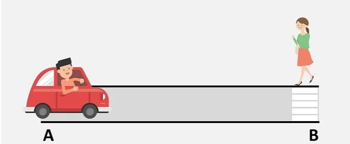
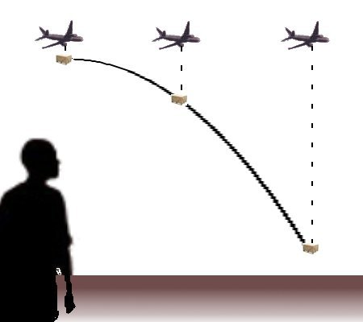
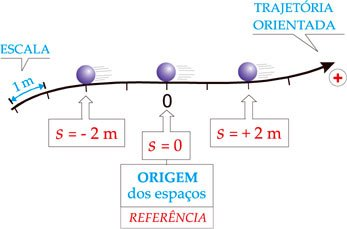
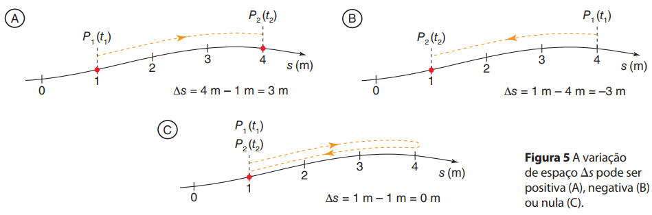

Conceitos Básicos
A cinemática é uma subdivisão da Mecânica que estuda o movimento sem analisar as suas causas. Inicialmente, estudaremos a cinemática escalar e unidimensional.
Antes de nos aprofundarmos nesse estudo há alguns conceitos básicos que iremos apresentar.
Todo objeto de estudo da cinemática é denominada móvel. O móvel pode ser classificado em partícula (ou ponto material) ou corpo extenso.
| Partícula | Corpo Extenso |
| É todo móvel que as dimensões são desprezadas, mas considera-se a massa. | É todo móvel com massa que as dimensões não são desprezadas. |
Em um problema de cinemática a análise do móvel como partícula ou corpo extenso dependerá das distâncias a serem percorridas. Utiliza-se o conceito de partícula quando as distâncias a serem percorridas são muito maiores que as dimensões do móvel, caso contrário, utiliza-se o conceito de corpo extenso, ou seja, as dimensões a serem percorridas tem dimensões próximas as dimensões do móvel.
Um outro conceito fundamental é o de referencial. O referencial é o local, corpo ou sistema, que é escolhido para se estudar o movimento.
Dizemos que o movimento é relativo pois dependendo do referencial adotado um corpo pode está parado ou em movimento. Como exemplo, podemos citar que quando estamos dentre de um veículo em movimento, verificamos que em relação a um ponto fixo fora do veículo estamos nos aproximando (movimento em relação a B) e em relação ao banco que estamos sentados estamos em repouso(em relaçao ao ponto A dentro do veículo).

Outro conceito fundamental na cinemática é o conceito de trajetória. A trajetória é o conjunto formado por todas as posições ocupadas por um móvel durante o seu movimento, tendo em vista determinado referencial. A figura demostra bem o conceito da trajetória dependente do referencial.

Para um observador dentro do avião a caixa descreve uma trajetória em linha reta e vertical, mas para a um homem que se encontra no solo em repouso o mesmo objeto descreve uma trajetória parabolica.
Em cinemática, a grandeza física que representa a posição de um móvel ao longo de uma trajetória é chamado espaço, usualmente representado por S. Ao representar os espa;cos em uma trajetória devemos arbitrar a origem dos espaços, isto é, o ponto a partir do qual contamos os espaços, conhecido por marco zero.
Devemos também arbitrar o sentido dos espaços crescentes através de uma seta que indica o sentido em que o valor dos espaços aumenta à medida que um móvel se movimenta a favor da seta. Cada espaço do móvel será o valor algébrico da distância entre o ponto em que o móvel se encontra e o marco zero(origem).

O deslocamento ou variação de espaço é dado pela diferença entre dois espaços percorridos por um móvel em um dado instante de tempo. Já a distância percorrida é dada pela soma do módulo dos deslocamentos parciais durante o movimento de uma partícula.

Dada todas as definições acima podemos definir movimento e repouso de um móvel como:
• Movimento: é o fenômeno físico no qual um móvel muda de posição, com o passar do tempo, em relação a um referencial adotado.
• Repouso: é o fenômeno físico no qual um móvel mantém a mesma posição, no decorrer do tempo, em relação a um referencial adotado.
Vídeo Aula
Exercícios de Fixação
01. O livro de física que está à sua frente se encontra em repouso, em relação a você, para que a leitura desta questão possa ser realizada. Mas esse mesmo livro, agora, está em movimento em relação a algum outro referencial. Então, cite alguns desses referenciais.
02. Imagine-se caminhando em uma calçada, de mãos dadas com alguém. Os passos estão sincronizados e vocês avançam no mesmo ritmo. Nesta situação, podemos afirmar que:
a) Tanto você como essa pessoa estão em movimento em relação à rua;
b) Você está em repouso em relação a esse alguém;
c) A pessoa está em repouso relativamente a você;
d) Um poste de iluminação da rua está em movimento em relação a vocês dois;
e) Todas as afirmações anteriores estão corretas.
03. Se um móvel A estiver em movimento em relação a um móvel B, que por sua vez permanece em repouso em relação a um móvel C, então qual será o estado cinemático (movimento ou repouso) de C relativamente a A?
04. Dizemos que os conceitos de movimento e repouso são relativos, pois dependem do sistema de referência estabelecido. Com base nisso é correto afirmar que:
( ) Um corpo parado em relação a um referencial pode estar em movimento em relação a outro referencial.
( ) Um livro colocado sobre uma mesa está em repouso absoluto, pois, para qualquer referencial adotado, sua posição não varia com o tempo.
( ) Em relação a um edifício, o elevador estacionado no terceiro andar está em repouso. Porém, em relação ao Sol, o mesmo elevador encontra-se em movimento.
05. Um caminhão movimenta-se pela estrada com velocidade constante, no sentido indicado na figura. Um pacote se desprende do teto do caminhão e cai no chão da carroceria. Em que posição indicada na figura (A, B e C ) irá cair o pacote ? Justifique.